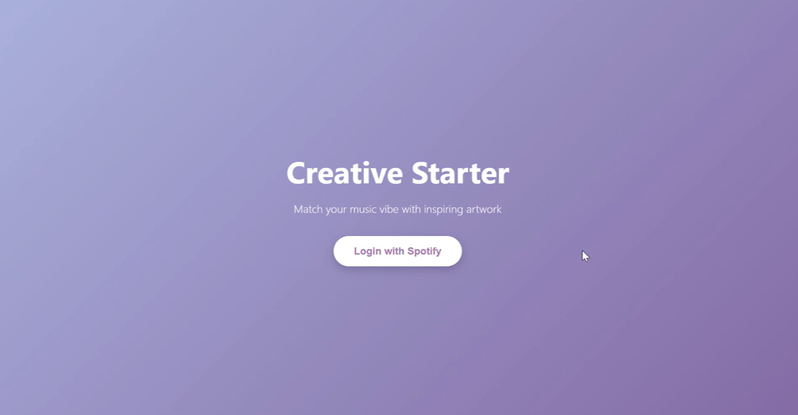
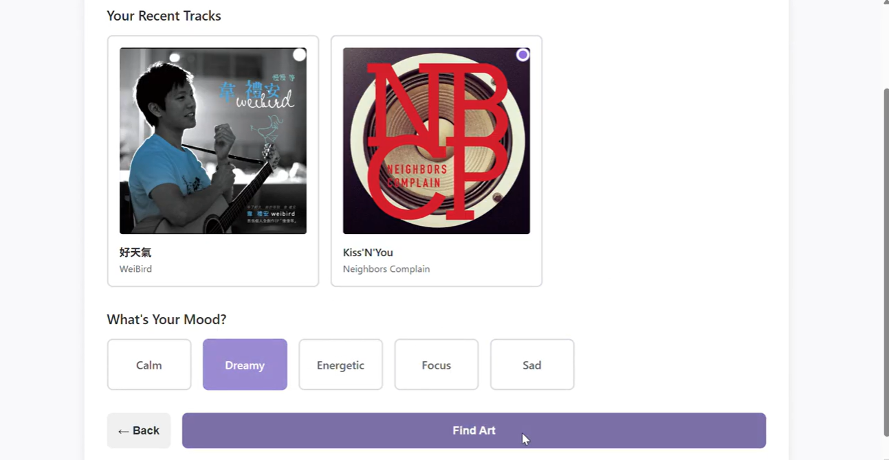
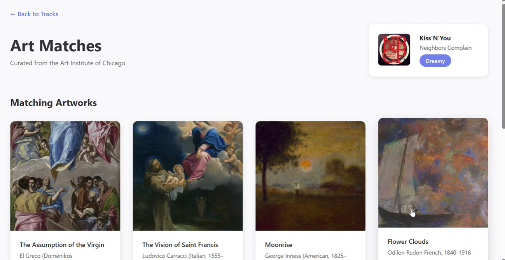

← Back to Work
← Back to Work
Creative Starter
Exploring art through music and mood
01
Project Overview
Starting with a Song
I often listen to music when I am drawing or looking for ideas, especially when I do not know where to start. For my HCDE 310 final project, I wanted to see whether music could become a way to discover visual references.
I built Creative Starter, a Flask web application that connects Spotify's recently played tracks with artworks from the Art Institute of Chicago. Users choose a song, select a mood, and browse a small collection of artworks related to that mood. The idea was to give people a starting point for exploring art without needing to know what to search for.

02
Designing the Discovery Flow
Choosing a Song and a Mood
The application begins with Spotify login, followed by a page showing recently played tracks. I kept the song cards and five mood options on the same screen because I wanted users to make those choices together.
The mood is selected manually rather than inferred from the song. Someone might choose a calm song but still want to look at energetic artwork, so I did not want the music to determine the results entirely.
On the results page, I kept the chosen song and mood in the corner while the artworks take up most of the screen. Each artwork includes its title and artist when that information is available.

03
Building the Application
Working with Two APIs
I used Python and Flask to connect Spotify's listening history with the Art Institute of Chicago's collection. After retrieving the recent tracks, the application uses the selected mood to search for artworks through a set of related keywords.
For example, the dreamy mood searches for terms such as moon, cloud, and light. I also added basic filtering and ranking so the gallery could display a smaller set of results rather than every artwork returned by the API.
- Spotify Authentication
- Recent Tracks
- Song + Mood Selection
- Artwork Search
- Results Gallery

When the APIs Did Not Work as Expected
Spotify authentication took more time than I anticipated. I ran into access issues while connecting the API and had to revisit how the application handled authorization.
The museum API created a different problem. Some searches returned artworks without usable images or complete information, so I added checks before displaying the results.
I had originally imagined a closer connection between the music and the artwork. As I worked through the API limitations, I focused on building a smaller experience that I could actually implement and explain.
04
Reflection
What I Would Change
Creative Starter was my first experience bringing two external APIs into one web application. I learned more about how Flask routes work and how to handle data that does not always come back in the format I expect.
The biggest limitation is the relationship between the song and the artwork. Right now, the selected mood drives the search, while the song mainly provides context. The results can be interesting, but they are not necessarily connected to the music itself.
If I continued the project, I would want to explore whether musical characteristics could play a larger role in the search. I would also be interested in seeing what people actually do with the artworks they discover, especially whether the results help them begin a drawing or another creative task.